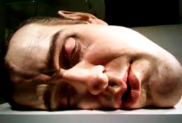
Mask II
Autorretrato hiperrealista de Mueck dormido a una escala gigante. sus figuras parecen a punto de cobrar vida. Mueck trabaja lentamente en su taller, convirtiendo el tiempo en parte integral de su proceso creativo
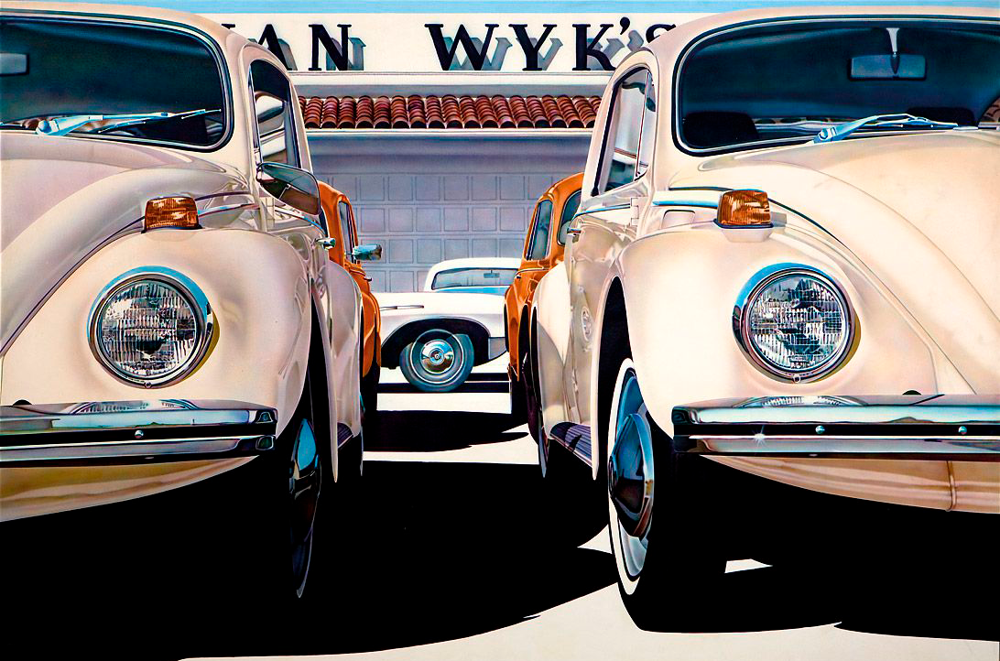
Esta obra, realizada por un artista desconocido, exhibe una extraordinaria habilidad técnica al reproducir cada línea, reflejo y sombra con una fidelidad asombrosa
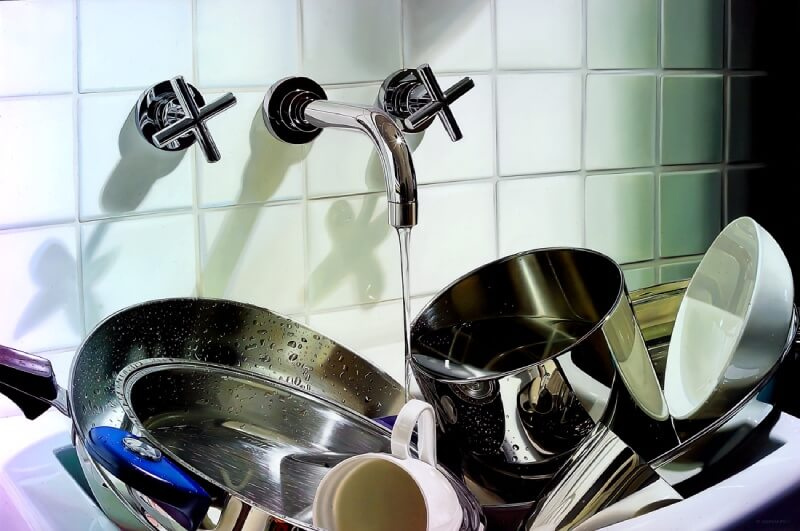
Roberto Bernadi nació en 1974. Su formación artística está centrada en el máximo detalle y en técnicas de pintura tradicionales.
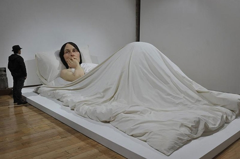
La obra "In Bed" de Ron Mueck, titulada "2005 | 47 años", es una impactante escultura que representa a una persona acostada en una cama.
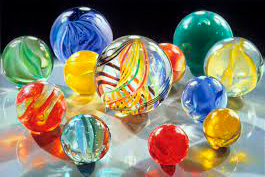
"Dazzling Dozen" es una obra del artista Charles Bell que captura la esencia del realismo fotográfico en la pintura. En esta composición, Bell presenta una selección de doce bolas de billar.
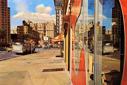
"Hotel Embassy" de Richard Estes es una pintura al óleo que muestra el edificio con una precisión impresionante. Cada detalle arquitectónico está meticulosamente representado, creando una sensación de realidad asombrosa.
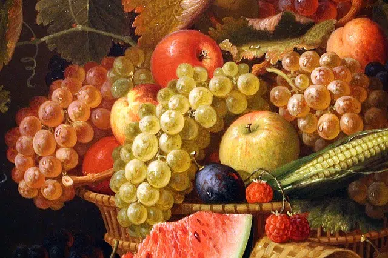
La obra muestra una composición de uvas y otras frutas, capturadas con una increíble precisión que parece desafiar lo real. Cada detalle, desde la textura de la piel de las uvas hasta el brillo de la superficie
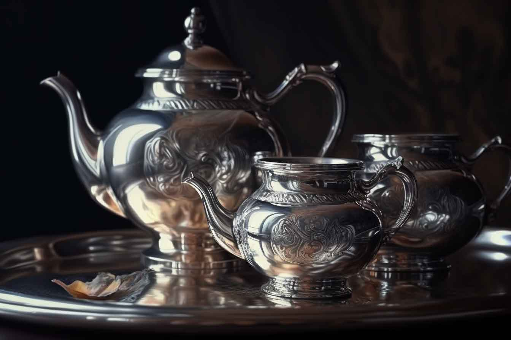
"La hora del té" de Magda Torres Gurza es un ejemplo destacado del hiperrealismo contemporáneo, un movimiento artístico que busca representar la realidad con un grado extremo de detalle y precisión.
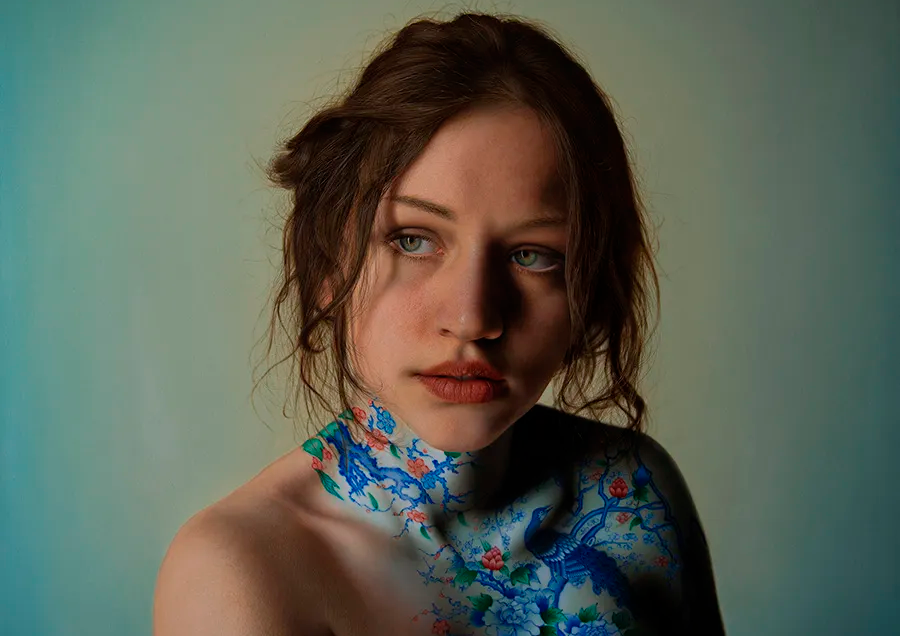
El hiperrealismo de Marco Grassi alcanza una perfección casi fotográfica. Sus obras parecen más reales que la realidad misma, con cuerpos que parecen esculpidos en porcelana o madera, y adornados con patrones elaborados.
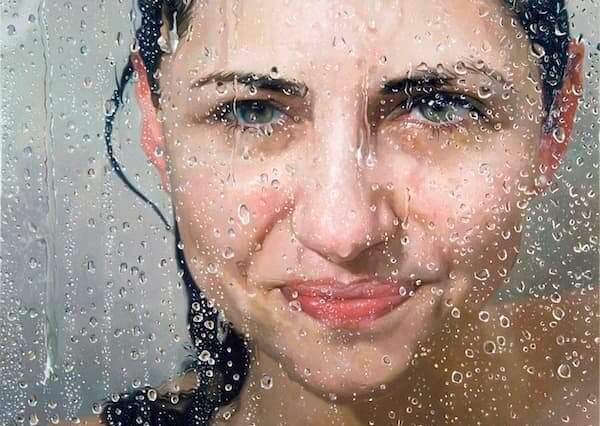
Pintura mojada de Alyssa Monks es un ejemplo impresionante de hiperrealismo. En esta obra, Monks logra capturar la apariencia de la piel húmeda con una precisión sorprendente, creando una sensación de realismo asombroso.
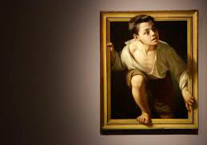
Huyendo de la crítica es una obra icónica creada por el artista Pere Borrell en España.
Juega con la percepción del espectador al crear la ilusión de que los personajes representados están escapando de la mirada crítica del observador
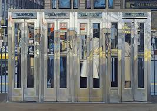
La obra "Cabinas telefónicas" fue creada por el artista Richard Estes en 1967. Esta pintura es un ejemplo destacado del estilo hiperrealista. En ella, se retrata con gran detalle las cabinas telefónicas urbanas, capturando la esencia de la vida citadina con precisión fotográfica.